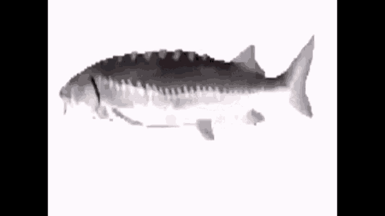

Spinning Fish refers to a 3D GIF of a fish spinning around to various songs, such as "Freaks" by Surf Curse and "Funkytown" by Lipps Inc. The GIF has been used in numerous ironic meme videos on YouTube.
While it is unclear where the 3D fish GIF comes from, on September 25th, 2020, YouTube user MrFatCatMan uploaded the earliest low-resolution video featuring the spinning fish, adding it to the song "Bumpy Ride, Nightcore Version" by Mohombi. The video received more than 230,000 views in three years (shown below).
